Dashboard — the Intelligence CenterDashboard — l'Intelligence Center
The operational home screen. It answers three questions at a glance — how much of my fleet has been scanned, how bad is it right now, and what changed since the last run — and it launches both kinds of scan.
La schermata operativa principale. Risponde a colpo d'occhio a tre domande — quanta parte del parco è stata scansionata, quanto è grave adesso e cosa è cambiato dall'ultima run — e avvia entrambi i tipi di scansione.
Page OverviewPanoramica all roles (stakeholder: own cone) · scanning denied to auditor, viewer and stakeholdertutti i ruoli (stakeholder: proprio cono) · scansione negata ad auditor, viewer e stakeholder
The Dashboard is the only page that hosts both scan engines. The threat intelligence query is targeted: you describe a vulnerability in free text (or paste a CVE ID), the application identifies the product behind that description and then checks every asset for it, streaming results into a console one host at a time. The posture scan is broad: it inventories every installed package on every enabled asset and matches the lot against OSV.dev.
La Dashboard è l'unica pagina che ospita entrambi i motori di scansione. La threat intelligence query è mirata: descrivi una vulnerabilità in testo libero (o incolli un CVE), l'applicazione identifica il prodotto dietro quella descrizione e poi verifica ogni asset, riversando i risultati in una console un host alla volta. La scansione di postura è ampia: inventaria ogni pacchetto installato su ogni asset abilitato e confronta il tutto con OSV.dev.
| Endpoint | FeedsAlimenta |
|---|---|
GET /api/dashboard | KPI cards, critical findings, recent activity, top exploitable.Card KPI, finding critici, attività recente, top exploitable. |
GET /api/asset/health | The ASSET AUTHENTICATION bars and the inventory list badges.Le barre ASSET AUTHENTICATION e i badge della lista inventario. |
GET /api/scan?q=…&deep=… | Server-Sent Events stream for the targeted scan.Stream Server-Sent Events per la scansione mirata. |
GET /api/posture/scan | Server-Sent Events stream for the posture scan.Stream Server-Sent Events per la scansione di postura. |
GET /api/risk/trend | The two sparklines and their deltas.I due sparkline e i relativi delta. |
Everything on this page is recomputed inside your visibility cone: an editor's KPIs describe only their own assets.
Tutto in questa pagina è ricalcolato dentro il tuo cono di visibilità: i KPI di un editor descrivono solo i suoi asset.
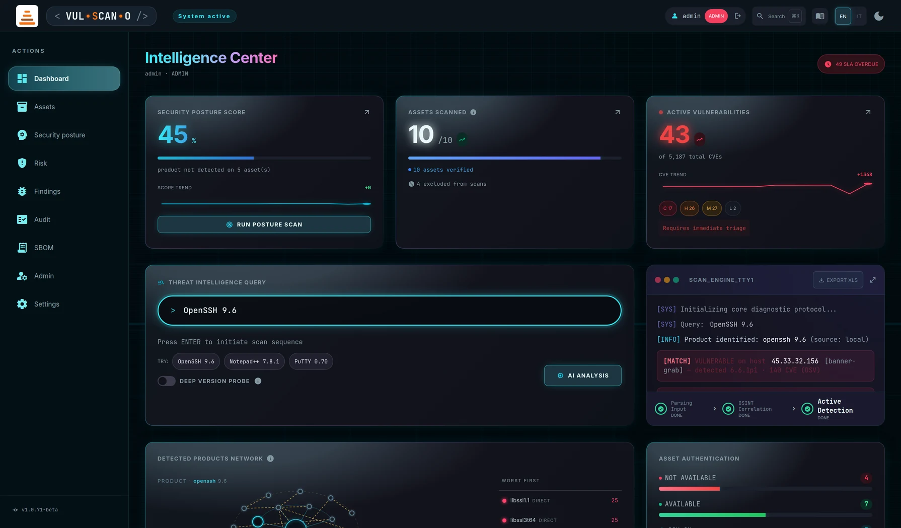
Header and onboardingIntestazione e onboarding
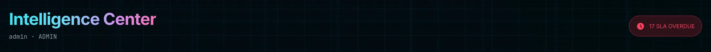
Features BreakdownDettaglio funzionalità
| ElementElemento | BehaviourComportamento |
|---|---|
| Intelligence Center heading + subtitleTitolo Intelligence Center + sottotitolo | Greets the signed-in user. For an editor the subtitle appends “in scope”, making the visibility cone explicit — a small but important honesty signal, because their numbers are not fleet-wide numbers. Saluta l'utente connesso. Per un editor il sottotitolo aggiunge «in scope», rendendo esplicito il cono di visibilità — un piccolo ma importante segnale di onestà, perché i suoi numeri non sono quelli dell'intero parco. |
| SLA OVERDUE | Appears only when at least one finding has passed its remediation deadline without being fixed or accepted. Shows the count and links straight to /findings. If this pill is visible, it is the first thing to deal with today. Compare solo quando almeno un finding ha superato la scadenza di remediation senza essere risolto o accettato. Mostra il conteggio e porta direttamente a /findings. Se questa pillola è visibile, è la prima cosa da affrontare oggi. |
| GET STARTED | A two-step onboarding panel, rendered only while the installation is still empty. Step 1 ADD ASSETS jumps to /assets; step 2 RUN SCAN starts a posture scan. It disappears for good once assets exist and a run has completed. Un pannello di onboarding in due passi, mostrato solo finché l'installazione è vuota. Il passo 1 ADD ASSETS porta a /assets; il passo 2 RUN SCAN avvia una scansione di postura. Sparisce definitivamente quando esistono asset e una run è stata completata. |
The three KPI cardsLe tre card KPI
1SECURITY POSTURE SCORE
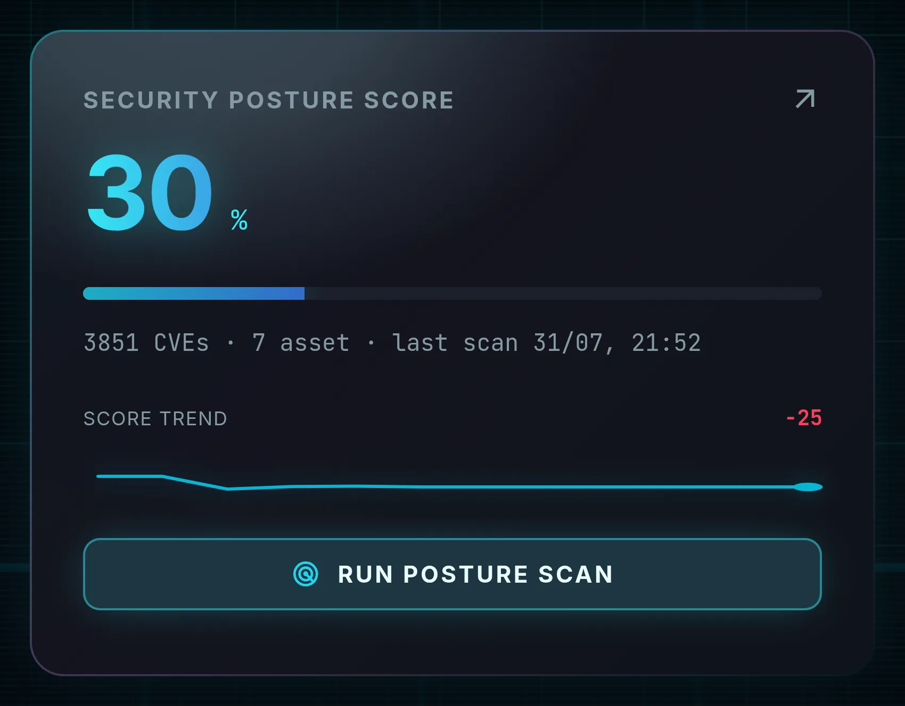
| ElementElemento | MeaningSignificato |
|---|---|
| The numberIl numero | Average posture score across the assets included in the latest run. 100 means no known vulnerable package was found; the score falls as more of the installed base carries CVEs, weighted by severity. The exact formula is in Appendix C.Score medio di postura sugli asset inclusi nell'ultima run. 100 significa che non è stato trovato alcun pacchetto vulnerabile noto; lo score scende man mano che una quota maggiore dei pacchetti installati presenta CVE, pesati per severità. La formula esatta è in Appendice C. |
| Progress barBarra | Colour-coded rendering of the same value.Rappresentazione colorata dello stesso valore. |
| SCORE TREND | A sparkline of the score across recent runs, with a signed delta versus the previous one. This is the number to quote in a weekly report: the absolute score depends on your fleet, the trend depends on your work.Uno sparkline dello score sulle run recenti, con delta segnato rispetto alla precedente. È il numero da citare in un report settimanale: lo score assoluto dipende dal tuo parco macchine, la tendenza dipende dal tuo lavoro. |
| Note lineRiga di nota | “product not detected on {n} asset(s)” — a caveat telling you the score does not cover everything you hoped.«product not detected on {n} asset(s)» — un avvertimento: lo score non copre tutto ciò che speravi. |
| RUN POSTURE SCAN | Starts the SCA run without leaving the page. The label cycles through SCANNING… and SCANNING {done}/{total}, ending at SCAN COMPLETE, with a progress bar and counter above it. It carries aria-live="polite", so screen readers hear the progress.Avvia la run SCA senza lasciare la pagina. L'etichetta passa per SCANNING… e SCANNING {done}/{total}, terminando con SCAN COMPLETE, con barra e contatore sopra. Ha aria-live="polite", quindi gli screen reader annunciano l'avanzamento. |
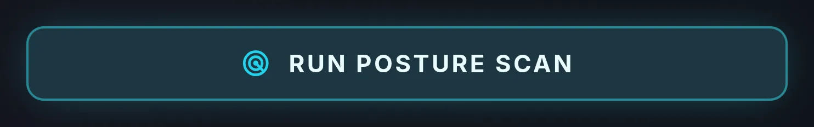
2ASSETS SCANNED
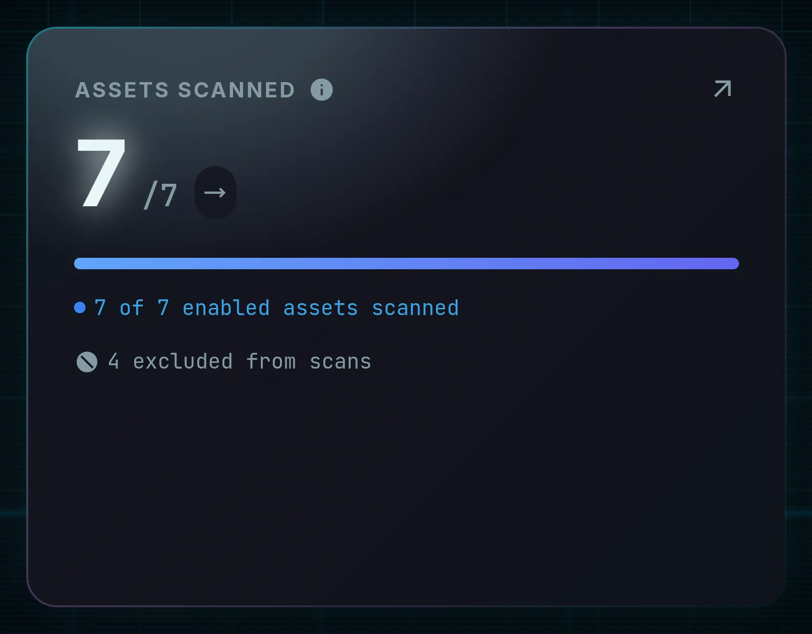
n / m— assets included in the last posture run out of all enabled inventory assets. A widening gap means hosts are unreachable or failing authentication.n / m— asset inclusi nell'ultima run di postura sul totale degli asset abilitati in inventario. Un divario crescente indica host irraggiungibili o con autenticazione fallita.- Coverage bar — the same ratio, visually.Barra di copertura — lo stesso rapporto, in forma visiva.
- Delta — “{d} vs previous run”, or the states awaiting scan / scanning… before the first result.Delta — «{d} vs previous run», oppure gli stati awaiting scan / scanning… prima del primo risultato.
- Excluded line — “{n} excluded from scans” counts assets you deliberately switched off with the SCAN toggle in /assets. Keeping an eye on this prevents the classic “why is that host never scanned?” surprise.Riga esclusi — «{n} excluded from scans» conta gli asset che hai volutamente disattivato con il toggle SCAN in /assets. Tenerla d'occhio evita la classica sorpresa «perché quell'host non viene mai scansionato?».
3ACTIVE VULNERABILITIES
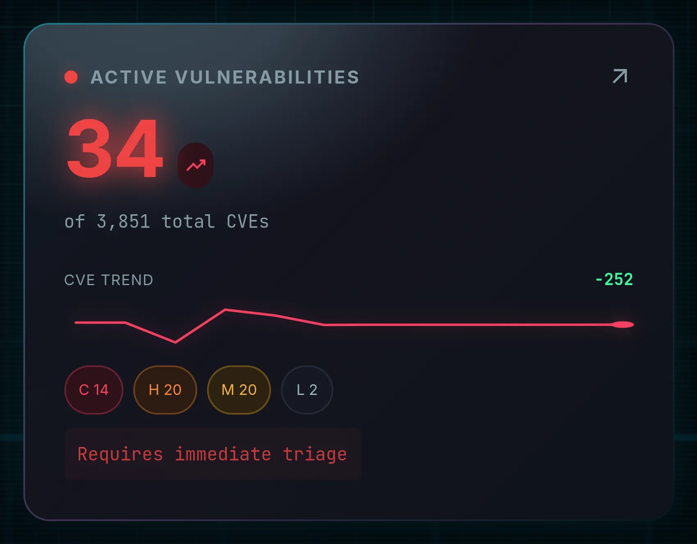
- Status dot and count — the number of CVEs requiring triage, with “of {n} total CVEs” underneath for context.Punto di stato e conteggio — il numero di CVE da sottoporre a triage, con «of {n} total CVEs» sotto per contesto.
- CVE TREND — sparkline plus signed delta versus the previous run.CVE TREND — sparkline più delta segnato rispetto alla run precedente.
- Severity chips — critical, high, medium and low counts, colour-coded, so you can tell a scary total from a scary distribution.Chip di severità — conteggi critical, high, medium e low, colorati, per distinguere un totale allarmante da una distribuzione allarmante.
- Verdict line — one of “High findings to review”, “No critical or high findings”, “No action required”.Riga di verdetto — una fra «High findings to review», «No critical or high findings», «No action required».
Threat intelligence query and scan consoleThreat intelligence query e console di scansione
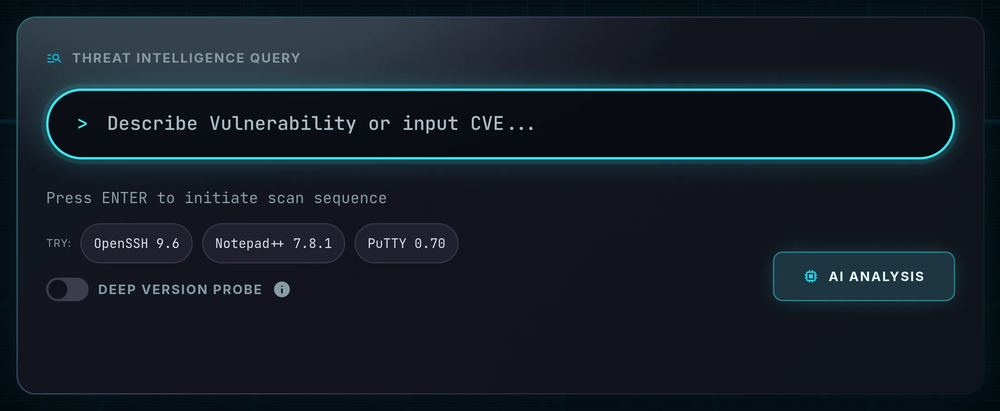
Features BreakdownDettaglio funzionalità
| ControlControllo | BehaviourComportamento |
|---|---|
| Query fieldCampo query “Describe Vulnerability or input CVE…” |
Accepts three shapes of input: a plain-language description (Buffer overflow affecting OpenSSH 8.4), a product with a version (nginx 1.21), or a bare CVE identifier. Identification runs locally first (regex plus a known-products dictionary, no network), then falls back to the configured web search engine. Press Enter to start.
Accetta tre forme di input: una descrizione in linguaggio naturale (Buffer overflow affecting OpenSSH 8.4), un prodotto con versione (nginx 1.21) o un identificativo CVE puro. L'identificazione parte in locale (regex più un dizionario di prodotti noti, senza rete), poi ripiega sul motore di ricerca web configurato. Premi Invio per avviare.
|
| AI ANALYSIS | Opens the SSE stream GET /api/scan?q=…. Results arrive one asset at a time rather than in one final block, so a slow host never blocks the rest.Apre lo stream SSE GET /api/scan?q=…. I risultati arrivano un asset alla volta invece che in un unico blocco finale, così un host lento non blocca gli altri. |
| TRY: | Prefilled example queries — click one to populate the field instantly. Useful for demonstrating the identification pipeline without inventing a query.Query di esempio precompilate — cliccane una per riempire il campo all'istante. Utile per dimostrare la pipeline di identificazione senza inventare una query. |
| EXPORT XLS | Disabled until a scan completes; then downloads the per-asset results as a spreadsheet.Disabilitato finché una scansione non è completata; poi scarica i risultati per asset come foglio di calcolo. |
4DEEP VERSION PROBE
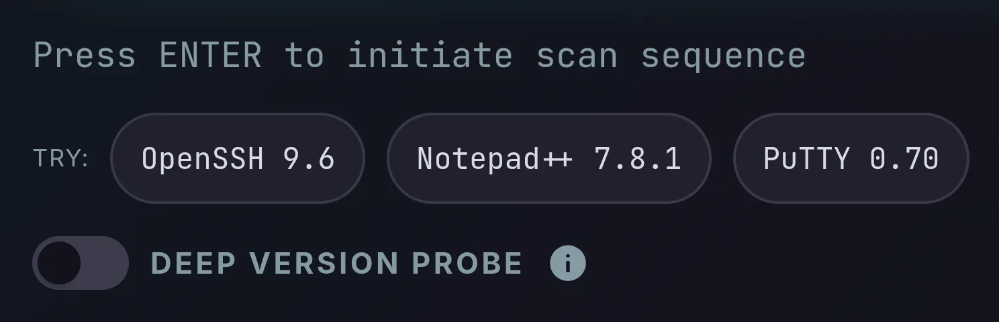
Adds &deep=true to the scan request. It applies only on the unauthenticated path
and only for the python product, when the passive banner does not reveal a
version. In that narrow case it sends full HTTP GET requests — including one to a deliberately non-existent
path — to read the Python/X.Y token from the Server header (Werkzeug, mod_wsgi) and
from framework tracebacks or error pages. Results obtained this way are tagged method: "deep-probe".
Aggiunge &deep=true alla richiesta di scansione. Si applica solo sul percorso non
autenticato e solo per il prodotto python, quando il banner passivo non
rivela la versione. In quel caso specifico invia richieste HTTP GET complete — inclusa una verso un percorso
volutamente inesistente — per leggere il token Python/X.Y dall'header Server
(Werkzeug, mod_wsgi) e dai traceback o dalle pagine di errore dei framework. I risultati così ottenuti sono
marcati method: "deep-probe".
python3 --version
regardless of this switch, so you rarely need it on a properly credentialed fleet.
È più lenta e genera traffico HTTP aggiuntivo sul target. Attivala solo su sistemi che
sei autorizzato a testare. Nota che gli asset autenticati eseguono comunque python3 --version
indipendentemente da questo interruttore, quindi su un parco con credenziali corrette serve di rado.
5IDENTIFICATION PIPELINE
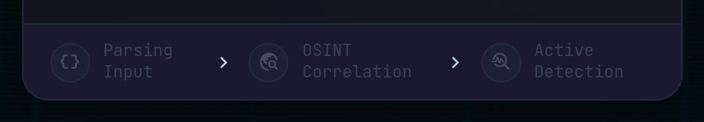
| StepPasso | Activates onSi attiva con | Completes onSi completa con |
|---|---|---|
| Parsing Input | scan startavvio scansione | target |
| OSINT Correlation | target | firstprimo result |
| Active Detection | firstprimo result | done |
Visual states: idle grey → running pulsing cyan → done green tick → error red. A step that never leaves OSINT Correlation tells you the product could not be identified — the console will say so explicitly.
Stati visivi: idle grigio → running ciano pulsante → done spunta verde → error rosso. Un passo che non supera mai OSINT Correlation indica che il prodotto non è stato identificato — la console lo dirà esplicitamente.
6SCAN_ENGINE_TTY1
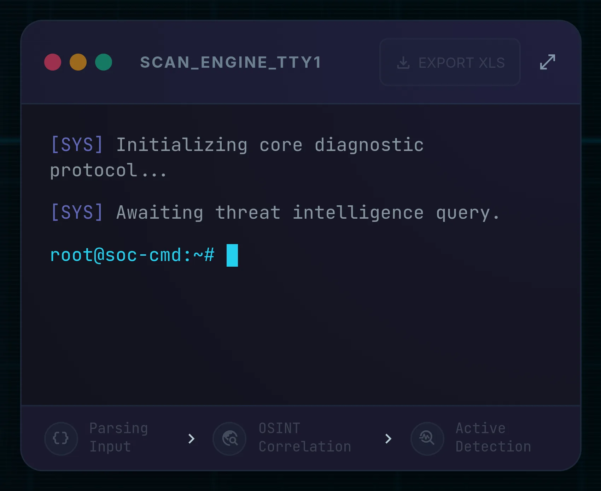
The console is the honest record of what actually happened. It contains, in order:
La console è il resoconto onesto di ciò che è realmente accaduto. Contiene, in ordine:
- the query you submitted;la query inviata;
- the identified product with its source (local dictionary or web search), or “No product identified from query.”;il prodotto identificato con la sua fonte (dizionario locale o ricerca web), oppure «No product identified from query.»;
- one line per asset with the detection method, the host, and detected or product not found;una riga per asset con il metodo di rilevamento, l'host e detected o product not found;
- CVE counts from OSV (“{n} CVE (OSV)”, or “no known CVE on OSV”, or “OSV unreachable: {err}”);i conteggi CVE da OSV («{n} CVE (OSV)», oppure «no known CVE on OSV», oppure «OSV unreachable: {err}»);
- the AI risk summary, always carrying the AI-GENERATED badge — or “(local LLM summary unavailable — Ollama offline)” when the model is not reachable;il riepilogo AI del rischio, sempre con il badge AI-GENERATED — oppure «(local LLM summary unavailable — Ollama offline)» quando il modello non è raggiungibile;
[AI]-tagged lines naming the provider and model actually invoked, so you always know which brain answered;righe marcate[AI]che nominano provider e modello effettivamente invocati, così sai sempre quale cervello ha risposto;- the resolved runtime dependencies (“Real dependencies resolved: {n} package(s) across {a} asset(s)”);le dipendenze runtime risolte («Real dependencies resolved: {n} package(s) across {a} asset(s)»);
- the closing line “Scan complete · {n} asset(s)”.la riga finale «Scan complete · {n} asset(s)».
DETECTED PRODUCTS NETWORK
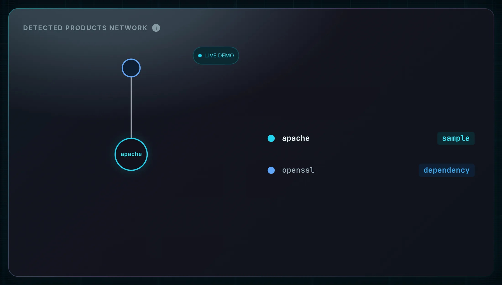
Page OverviewPanoramica
This panel is more interesting than it first looks, because it does not draw assumptions from a table — it draws dependencies actually measured on your hosts. Understanding how it is built tells you exactly when to trust it.
Questo pannello è più interessante di quanto sembri, perché non disegna ipotesi prese da una tabella: disegna dipendenze effettivamente misurate sui tuoi host. Capire come viene costruito ti dice esattamente quando fidarti.
How It WorksCome funziona
- Identification — the searched text resolves to a canonical product (alias match, or OSINT fallback). That becomes the central cyan node.Identificazione — il testo cercato viene risolto in un prodotto canonico (corrispondenza per alias o fallback OSINT). Diventa il nodo centrale ciano.
- Dependencies — on each authenticated Linux asset where the product is found, the scanner runs
lddover the product binary to list the shared libraries it really links, then maps every library to its owning package withdpkg -S(Debian/Ubuntu) orrpm -qf(RHEL/Fedora). The graph shows the union of those packages across all assets.Dipendenze — su ogni asset Linux autenticato dove il prodotto è presente, lo scanner eseguelddsul binario del prodotto per elencare le librerie condivise realmente collegate, poi associa ogni libreria al pacchetto che la fornisce condpkg -S(Debian/Ubuntu) orpm -qf(RHEL/Fedora). Il grafo mostra l'unione di quei pacchetti su tutti gli asset. - Inter-dependency links — for each dependency library, its direct
DT_NEEDEDentries are read withobjdump -p(fallbackreadelf -d) and resolved back to packages. A dashed edge A→B is drawn only when A really links B.Collegamenti fra dipendenze — per ogni libreria di dipendenza vengono lette le voci diretteDT_NEEDEDconobjdump -p(fallbackreadelf -d) e risolte nuovamente in pacchetti. Un arco tratteggiato A→B viene disegnato solo quando A collega davvero B. - Noise filtering — ubiquitous base libraries (libc, the loader, libgcc/libstdc++) are removed, because they connect to everything and inform nothing.Filtro del rumore — le librerie di base onnipresenti (libc, il loader, libgcc/libstdc++) vengono rimosse, perché collegano tutto e non informano di nulla.
- Provenance — the legend reports how many packages were resolved and across how many assets.Provenienza — la legenda riporta quanti pacchetti sono stati risolti e su quanti asset.
Features Breakdown — statesDettaglio funzionalità — stati
| StateStato | What you seeCosa vedi |
|---|---|
| Idle (no scan yet)Inattivo (nessuna scansione) | A rotating demonstration: the graph switches product every three seconds, marked with a LIVE DEMO badge and a sample tag in the legend. Nothing here reflects your fleet.Una dimostrazione a rotazione: il grafo cambia prodotto ogni tre secondi, contrassegnato dal badge LIVE DEMO e dall'etichetta sample in legenda. Nulla qui riflette il tuo parco macchine. |
| ScanningIn scansione | A graph-shaped loader: central node with a spinner, rotating rings, pulsing placeholder nodes and a shimmering skeleton legend.Un loader a forma di grafo: nodo centrale con spinner, anelli rotanti, nodi segnaposto pulsanti e legenda scheletro con effetto shimmer. |
| CompleteCompletato | The real graph of the detected product, with the dependency legend and the inter-dependency link count.Il grafo reale del prodotto rilevato, con la legenda delle dipendenze e il conteggio dei collegamenti fra dipendenze. |
| No dependenciesNessuna dipendenza | Only the central node, plus the explanation: “No runtime dependencies resolved. Real dependencies are read from authenticated Linux assets…”. Banner-only, simulated, Windows or unreachable assets cannot resolve dependencies — this is a limitation, not a bug.Solo il nodo centrale, più la spiegazione: «No runtime dependencies resolved. Real dependencies are read from authenticated Linux assets…». Asset con solo banner, simulati, Windows o irraggiungibili non possono risolvere dipendenze — è un limite, non un difetto. |
Insight panelsPannelli di analisi
7ASSET AUTHENTICATION
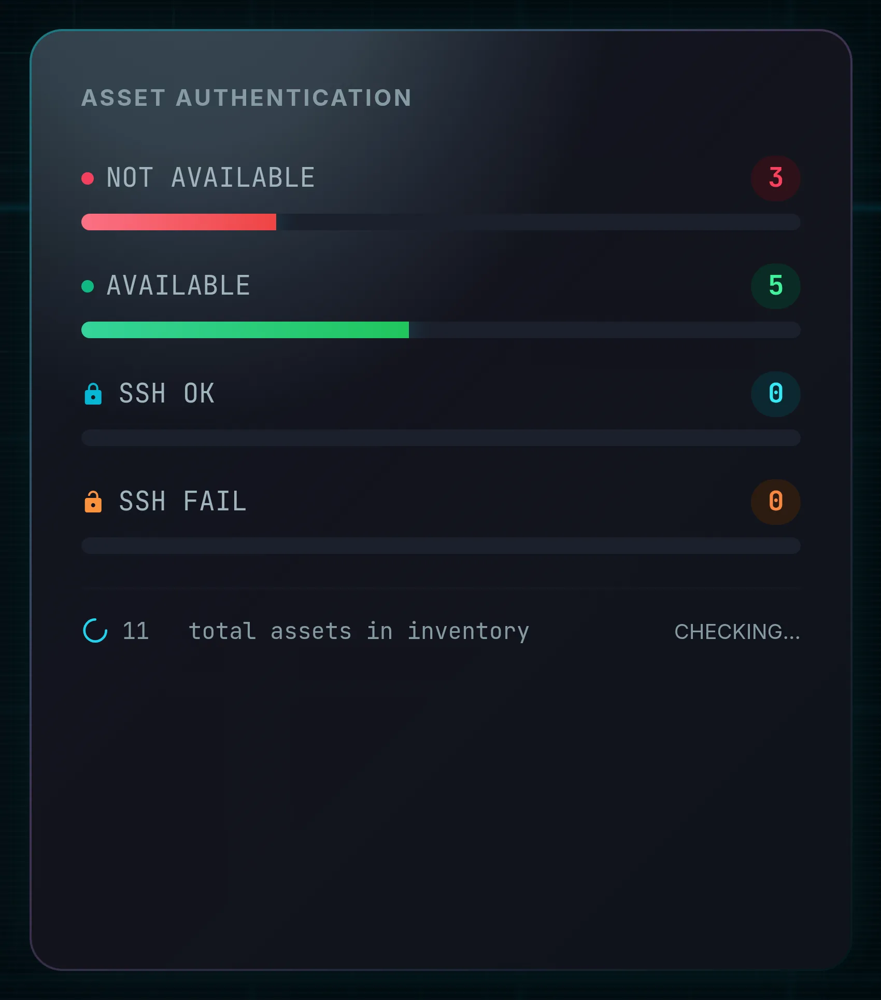
| BarBarra | MeaningSignificato |
|---|---|
| NOT AVAILABLE | Host did not answer on TCP at all.L'host non ha risposto affatto su TCP. |
| AVAILABLE | Reachable, but no credentials are stored — banner grabbing only.Raggiungibile, ma non sono salvate credenziali — solo banner grabbing. |
| SSH OK | Reachable and the SSH login succeeded with the decrypted password. These are the assets that produce a full package inventory.Raggiungibile e login SSH riuscito con la password decifrata. Sono gli asset che producono un inventario pacchetti completo. |
| SSH FAIL | Reachable but the login failed — wrong credentials, or a password that is not encrypted.Raggiungibile ma login fallito — credenziali errate o password non cifrata. |
A “Checking…” spinner runs while the probe is in flight and the counters increment asset by asset. The total number of inventory assets is printed underneath.
Uno spinner «Checking…» gira durante la sonda e i contatori si incrementano asset per asset. Il numero totale di asset in inventario è stampato sotto.
8CRITICAL FINDINGS
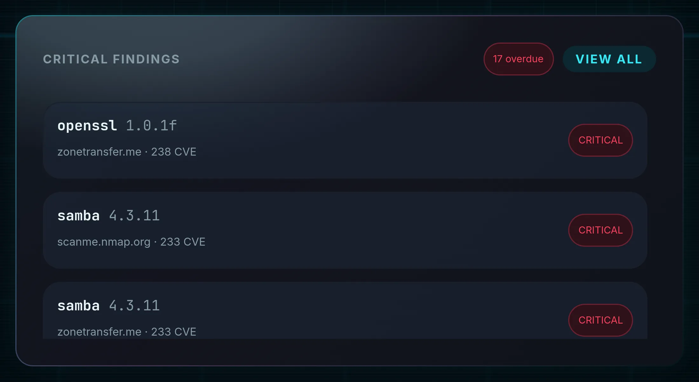
Empty states are explicit and distinguish the two very different situations: “No critical or high findings in the last posture scan.” (good news) versus “No posture scan yet — run one to see real findings here.” (no data at all).
Gli stati vuoti sono espliciti e distinguono due situazioni molto diverse: «No critical or high findings in the last posture scan.» (buona notizia) e «No posture scan yet — run one to see real findings here.» (nessun dato).
9ASSET INVENTORY (LOCAL)
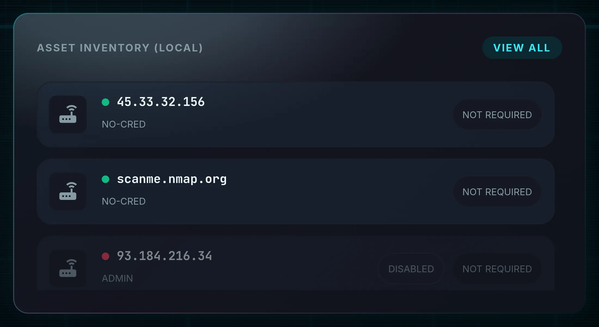
States: Loading inventory…, No assets., Inventory load failed.
Stati: Loading inventory…, No assets., Inventory load failed.
10TOP EXPLOITABLE
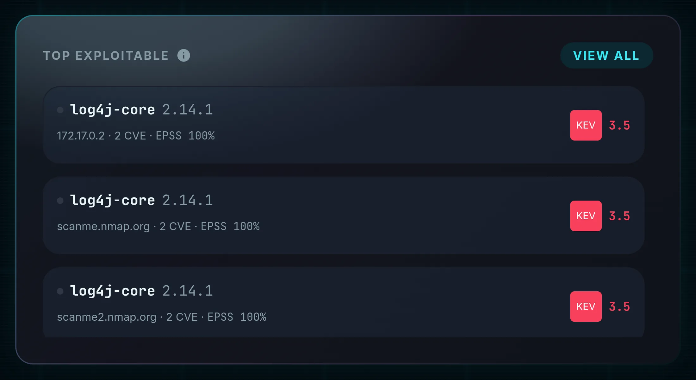
The ranking rule, stated in the panel's own tooltip: CISA KEV entries first (confirmed exploited in the wild), then EPSS probability, then network exposure. Each row also states whether an exposed port actually matched — “Exposed port detected” or “No exposed port matched”. This is a compact preview of the /risk page; when the two disagree, /risk is the fuller answer because it also weighs business context.
La regola di ordinamento, dichiarata nel tooltip del pannello: prima le voci CISA KEV (sfruttamento confermato in the wild), poi la probabilità EPSS, poi l'esposizione di rete. Ogni riga indica anche se una porta esposta ha effettivamente corrisposto — «Exposed port detected» o «No exposed port matched». È un'anteprima compatta della pagina /risk; quando le due divergono, /risk è la risposta più completa perché pesa anche il contesto di business.
States: Assessing exploitability…, No exploitable findings in the latest run., Exploitability data unavailable — run a posture scan.
Stati: Assessing exploitability…, No exploitable findings in the latest run., Exploitability data unavailable — run a posture scan.
11RECENT ACTIVITY
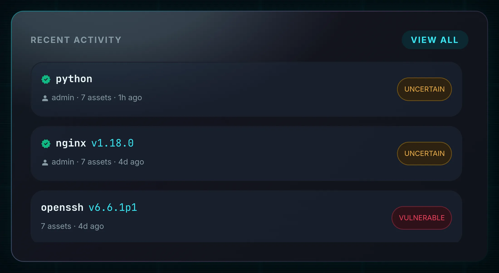
Times are relative — just now, {n}m ago, {n}h ago, {n}d ago — with the asset count per scan. Empty state: “No scans recorded yet.” For the full, verifiable history see /audit.
I tempi sono relativi — just now, {n}m ago, {n}h ago, {n}d ago — con il numero di asset per scansione. Stato vuoto: «No scans recorded yet.» Per lo storico completo e verificabile vedi /audit.
Procedures and expected outcomesProcedure e risultati attesi
How It Works — targeted vulnerability scanCome funziona — scansione mirata di vulnerabilità
- Type a description or a CVE ID in THREAT INTELLIGENCE QUERY, or click a TRY: chip.Digita una descrizione o un CVE in THREAT INTELLIGENCE QUERY, oppure clicca un chip TRY:.
- Leave DEEP VERSION PROBE off unless you specifically need the Python version and are authorized to send extra HTTP traffic to the target.Lascia DEEP VERSION PROBE disattivata a meno che tu non abbia specificamente bisogno della versione Python e sia autorizzato a inviare traffico HTTP aggiuntivo al target.
- Press Enter or AI ANALYSIS.Premi Invio o AI ANALYSIS.
- Watch the pipeline: Parsing Input lights up, then OSINT Correlation once the product resolves, then Active Detection as assets stream back.Osserva la pipeline: si accende Parsing Input, poi OSINT Correlation quando il prodotto viene risolto, poi Active Detection mentre gli asset rispondono.
- Read the console: each asset produces a line with method (banner, authenticated, simulated, deep-probe), verdict and CVE count.Leggi la console: ogni asset produce una riga con metodo (banner, autenticato, simulato, deep-probe), verdetto e conteggio CVE.
- When the run finishes, press EXPORT XLS if you need the results outside the application.A fine run, premi EXPORT XLS se ti servono i risultati fuori dall'applicazione.
How It Works — full posture scanCome funziona — scansione di postura completa
- Press RUN POSTURE SCAN inside the SECURITY POSTURE SCORE card. To restrict the run to specific hosts, use /intel instead — it has an asset picker.Premi RUN POSTURE SCAN nella card SECURITY POSTURE SCORE. Per limitare la run ad host specifici usa invece /intel — ha un selettore di asset.
- The button switches to SCANNING…, then to SCANNING {done}/{total} as each asset is inventoried and matched against OSV.Il pulsante passa a SCANNING…, poi a SCANNING {done}/{total} man mano che ogni asset viene inventariato e confrontato con OSV.
- You may navigate away — the run continues server-side; you just stop seeing the progress.Puoi cambiare pagina — la run prosegue lato server; smetti solo di vedere l'avanzamento.
- On SCAN COMPLETE the KPIs, trends and panels refresh, and so do /intel, /sbom, /risk and /findings.Con SCAN COMPLETE si aggiornano KPI, tendenze e pannelli, e con loro /intel, /sbom, /risk e /findings.
Expected OutcomeRisultato atteso
After a targeted scan: the console holds a full transcript ending in “Scan complete · n asset(s)”, the product graph shows the identified product with its measured dependencies, the pipeline shows three green ticks, EXPORT XLS becomes available, and a new entry appears in /audit.
After a posture scan: all three KPI cards update with fresh trend arrows, CRITICAL FINDINGS and TOP EXPLOITABLE populate, and a new run appears in the /intel run selector.
As an auditor, viewer or stakeholder: both scan buttons are unavailable — these roles read
but trigger nothing (the server answers 403 regardless of what the UI shows).
Dopo una scansione mirata: la console contiene la trascrizione completa che termina con «Scan complete · n asset(s)», il grafo prodotti mostra il prodotto identificato con le dipendenze misurate, la pipeline mostra tre spunte verdi, EXPORT XLS diventa disponibile e una nuova voce compare in /audit.
Dopo una scansione di postura: tutte e tre le card KPI si aggiornano con nuove frecce di tendenza, CRITICAL FINDINGS e TOP EXPLOITABLE si popolano e una nuova run compare nel selettore di /intel.
Come auditor, viewer o stakeholder: entrambi i pulsanti di scansione non sono disponibili — questi
ruoli leggono ma non avviano nulla (il server risponde 403 a prescindere da ciò che mostra
l'interfaccia).